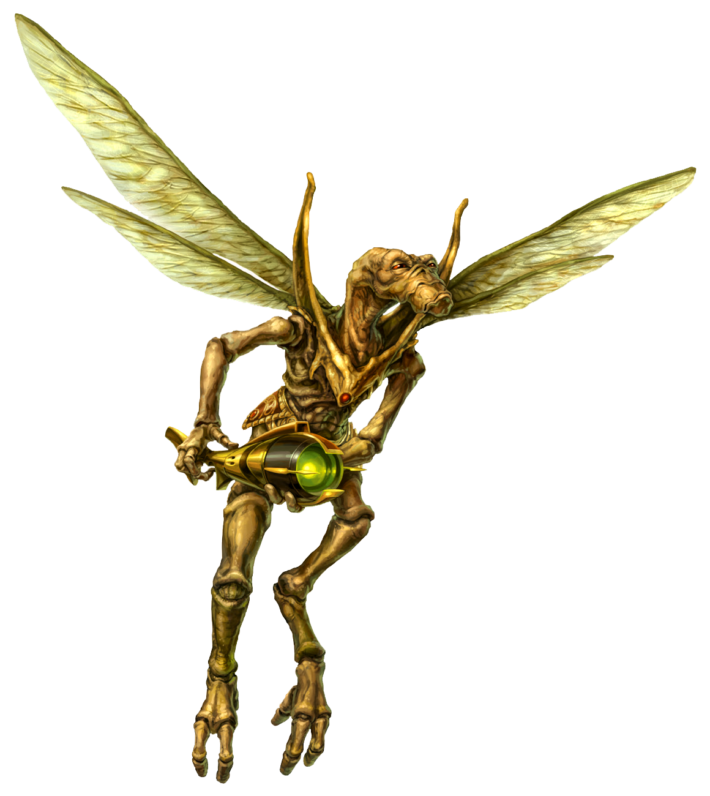

Geonosian
geonosian
Special Abilities: Geonosians begin with one rank in a skill of their choice. They still may not train this skill above rank 2 at character creation.
Industrious: A Geonosian who provides assistance adds to the check, in addition to the normal benefits of assistance, and the Geonosian heals 1 strain.
Winged: Geonosians can fly.
No species has changed the face of the galaxy and the Galactic Republic as much as the Geonosians while receiving so little recognition. Without the oppressed labor of the Geonosian worker caste, the Confederacy of Independent Systems wouldn’t have their massive droid army. Yet for all their efforts, the Geonosians, aristocratic and worker caste alike, face occupation and loss of sovereignty under the Republic flag.
A winged, insectoid species, Geonosians have a slim, humanoid build. Their chitinous skin ranges from red or orange to green or blue in hue, and their limbs have additional joints compared to most humanoids. Depending on a Geonosian’s caste, their wings may be vestigial or fully functional. Beyond this general form, the height, look, and structure of individual Geonosians varies. Compared to most sentients, Geonosians don’t live long—with an average lifespan of sixty-five years—and they mature quickly.
Geonosian hives welcome physiological differences insofar as they might benefit the hive. By modifying genetics, either through intentional engineering or selective breeding, hives produce a wide variety of near-subspecies among their worker and warrior castes. These modification experiments, however, remain haphazard and prone to the whims of the aristocratic caste.
Geonosian society centers around their queens, their hives, and the castes within those hives. Offworlders generally don’t realize that Geonosians have a queen, and even fewer realize that they have multiple queens, sometimes many within a single hive. In some hives, the queen simply produces offspring, and the aristocratic caste rules. In other hives, the queen acts behind the scenes, manipulating the squabbling aristocrats’ desire for power. In still other hives, the queen rules directly.
Historically, the hives of Geonosis have fought each other for resources, territory, sport, and political power. When the Geonosians began trading with offworlders, this competition was channeled into economic and industrial—and sometimes open—warfare. The warrior caste bears the brunt of the fighting, though the survivors receive promises of promotion. Often, warriors also serve as police, protecting, but more often suppressing, their own hive.
With a worker caste whose members function as slaves, Geonosian hives can produce an incredible quantity of industrial goods, even changing their production focus within days. This dependence on an oppressed caste, along with the planet’s remote location in the Outer Rim, has kept Geonosis from receiving official representation in the Galactic Republic. Many citizens of the Republic have no idea thattheir droids and other goods were built via Geonosian worker caste labor.
Throughout Geonosian history, the worker caste has repeatedly revolted against the oppression of the aristocracy. The warriors inevitably have countered with quick and bloody suppression. When the warriors of a hive revolt, the hive’s aristocrats have been known to negotiate with other hives for reinforcements to quell their own populace.
Geonosis lies in the Arkanis sector of the Outer Rim, near Tatooine. Its sun’s heat and radiation blasts the land, and massive sandstorms scour the harsh desert planet. Large, hollowed-out hive colonies in giant spires dot the landscape and offer respite from the radiation and heat. Tunnels worm through the planet, connecting hives and providing additional space for expansion or waging inter-hive warfare.
Geonosis has fifteen moons, whose gravitational pull causes the volcanic activity on the planet. It also has a giant ring system, which formed recently enough—in terms of eons—that the Geonosians have myths describing an angry universe destroying a moon to teach a weak species a lesson on survival.
Because Geonosis lies outside Republic space, the Republic—including the Jedi—had no official standing to investigate the world in the years leading up to the Clone Wars. Even had the Republic been aware of what was transpiring on Geonosis, it had no legal justification for enforcing regulations or otherwise interfering in the massive arms buildup the Geonosians were undertaking at the behest of planets and corporations that would soon secede.
Offworlders know Geonosian Hive-Mind as a spoken language with clicks and low, guttural notes. Offworlders can learn how to speak it, but Geonosians also employ a full range of touches, pheromones, and body motions to communicate. This explains why some Geonosians come away from offworlder conversations with a completely different perception of what has transpired, and it also explains how some Geonosians can communicate as if by telepathy.
On Geonosis, some members of the aristocratic caste learn to understand and even speak Basic. Regardless of caste, Geonosians who venture out into the galaxy may eventually learn Basic, though they rarely speak it. With this simpler language, Geonosians do not face the same kinds of miscommunications as with their native tongue.
While Geonosis was the primary producer of droids for the Separatists’ droid army, its loyalty sat firmly with the Confederacy of Independent Systems. For the lower castes, life became more brutal and oppressive. For the upper castes, their wealth and influence only increased. After the Second Battle of Geonosis, however, the planet comes under Republic control and occupation.
The Republic remains less concerned with governance and more with occupation to keep the planet away from Separatist hands. Some hives eagerly aid the Republic in order to gain power in the new regime. Other hives go into hiding, hoping for this conflict to pass. A few plan insurrection, but only if they believe they can come out on top.
Most citizens of the Republic associate the droid army with the public face of the Separatist Alliance, but few know what species constructed them. As a result, those relatively few free Geonosians wandering the galaxy face little prejudice, at least not for their people’s part in the Clone Wars.
The creation of Karina the Great, the secret leader of the Stalgasin hive, brain worms insert themselves into a Geonosian brainstem to control the motor functions of the host. Queen Karina uses these “children” to reanimate slain Geonosians, as their neurological physiology allows their bodies to continue being viable even when higher brain functions have been destroyed. Their bodies, however, continue to decay. Even more horrifying, brain worms can take over a living body. In effect, hosts become prisoners in their own flesh. Luckily, the brain worms hibernate and may even die in extreme cold, returning control back to the host.